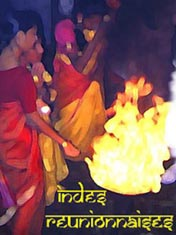

Lorsque je parle autour de moi, des différentes composantes de la population de
l'île, je dois toujours m'attarder sur les Indiens. Ils apportent
beaucoup à l'île, beaucoup de samoussas ou de cabri massalé mais pas seulement.
Il sont la composante hindouiste de l'île avec ses temples et ses fêtes colorées; mais aussi à l'origine d'une présence musulmane, sereine et tolérante, selon le livre de Koulsoum Moussa mais aussi studieuse et prospère. Ils sont le commerce florissant mais aussi le prolétariat des villes qui a porté l'économie de la canne à sucre pendant des années. Ils sont zarabes, et
malabars. Bref, l'Inde à la réunion elle est plurielle.
Philippe Praxt ne s'y est pas trompé, il a appelé son site Indes Réunionnaises. Réalisé à la suite d'un séjour de cinq ans à la Rivière Saint-Louis, ce site qui se veut modeste est en fait un véritable essai sur les Indiens de la Réunion.